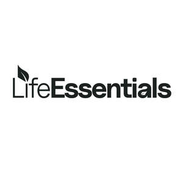

Trade Mark Journal No.2025/021 23 May 2025
UK00004201839 12 May 2025 (5)

- Class 5
- Mineral supplements; protein supplements; prebiotic supplements; mineral food supplements; dietary food supplements; anti-oxidant supplements; liquid vitamin supplements; mineral nutritional supplements; enzyme dietary supplements; glucose dietary supplements; lecithin dietary supplements; alginate dietary supplements; casein dietary supplements; protein dietary supplements; liquid dietary supplements; liquid nutritional supplements; zinc dietary supplements; liquid herbal supplements; lutein dietary supplements; mineral supplements to foodstuffs; mineral dietary supplements; dietary and nutritional supplements; anti-oxidant food supplements; vitamin and mineral supplements; dietary supplements for humans; fitness and endurance supplements; dietary supplements for infants; dietary supplements in powder form; vitamin and mineral food supplements; food supplements for dietetic use; whey protein dietary supplements; folic acid dietary supplements; coenzyme q10 dietary supplements; activated charcoal dietary supplements; pine pollen dietary supplements; soy isoflavone dietary supplements; protein powder dietary supplements; acai powder dietary supplements; soy protein dietary supplements; dietary supplements for controlling cholesterol; mineral dietary supplements for humans; food supplements in liquid form; dietary supplements for human beings; dha algae oil dietary supplements; food supplements for non-medical purposes; food supplements consisting of trace elements; food supplements consisting of amino acids; nutritional supplements consisting primarily of magnesium; nutritional supplements consisting primarily of zinc; nutritional supplements consisting primarily of iron; nutritional supplements consisting primarily of calcium; dietary supplements consisting primarily of iron; dietary supplements consisting primarily of calcium; nutritional supplements consisting of fungal extracts; dietary supplements consisting primarily of magnesium; dietary supplements with a cosmetic effect; dietary supplements promoting fitness and endurance; health-aid foods supplements containing ginseng; health food supplements made principally of minerals; health food supplements made principally of vitamins; dietary food supplements used for modified fasting; herbal dietary supplements for persons special dietary requirements; vitamin preparations in the nature of food supplements; dietary supplements for humans not for medical purposes; health food supplements for persons with special dietary requirements.
Balance Life Group LTD
Representative: Stobbs